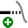

Modyfikowanie geometrii
W TecZone module Gięcie dostępny jest potężny edytor szkiców 2D z myślą o modyfikacji, oczyszczaniu lub dodawaniu do geometrii. Użyj klawisza SkrótS, aby przejść do trybu szkicowania. Edytor wyświetla część w widoku rozwinięcia.

W rozwiniętym widoku kliknij ikonę Oczyść  lub naciśnij klawisz Skrótu S.
lub naciśnij klawisz Skrótu S.
Otwiera się menu z różnymi ikonami do przetwarzania rozwiniętego widoku:
Panel Szkic
| Ikona | Symbol | Znaczenie |
|---|---|---|
|
Wybierz |
Wybierz obiekty, linie, wpisy itp. |
|
LINIA |
Szkicuje linię |
|
Powiązane linie |
Szkicuje dowolną liczbę linii |
|
Równoległa |
Szkicuje linię równoległą do linii |
|
Normal |
Szkicuje styczną do krzywej |
|
Linia gięcia |
Szkicuje normalną linię do linii |
|
Łuk z punktami środkowymi |
Szkicuje linię gięcia |
|
Łuk z 2 punktami |
Szkicuje łuk od punktu środkowego, punktu początkowego i punktu końcowego |
|
Łuk z 3 punktami |
Szkicuje łuk okręgu przechodzący przez dwa zdefiniowane punkty (punkt początkowy i końcowy) |
|
Łuk styczny |
Szkicuje łuk styczny do elementów szkicu |
|
Prostokąt |
Szkicuje prostokąt |
|
Punkt środkowy prostokąta |
Szkicuje prostokąt od środka |
|
Okrąg |
Szkicuje okrąg. Zaznacz środek okręgu i przeciągnij kursor, aby zdefiniować promień lub wprowadź wartość długości promienia |
|
Koło opisane z 2 punktami |
Szkicuje okrąg zgodnie z podanym obwodem. Wybierz punkt na obwodzie, a następnie drugi i trzeci punkt. |
|
Koło opisane z 3 punktami |
Szkicuje okrąg zgodnie z podanym obwodem. Wybierz punkt na obwodzie, następnie drugi i trzeci punkt. |
|
Okrąg z 2 stycznymi |
Szkicuje okrąg z dwiema stycznymi. Wprowadź średnicę okręgu, następnie wybierz pierwszą styczną, a następnie drugą styczną. |
|
Okrąg z 3 stycznymi |
Szkicuje okrąg z trzema stycznymi. Wprowadź średnicę okręgu, a następnie wybierz pierwszą styczną, następnie drugą styczną, a następnie trzecią styczną. |
|
Wielokąt z punktem środkowym - narożnik |
Szkicuje okrąg z trzema stycznymi. Wprowadź średnicę okręgu, a następnie wybierz pierwszą styczną, następnie drugą styczną, a następnie trzecią styczną. |
|
Wielokąt z punktem środkowym - środek krawędzi bocznej |
Szkicuje wielokąt. Określ liczbę boków i wybierz punkt środkowy oraz środek krawędzi bocznej. |
|
Wielokąt z krawędzią boczną |
Szkicuje wielokąt. Określ liczbę boków i zdefiniuj punkt początkowy oraz punkt końcowy boku. |
|
Zaokrąglenie |
Zaokrągla wspólny narożnik dwóch elementów szkicu o wprowadzonej wartości promienia, dzięki czemu tworzony jest łuk styczny. |
|
Sfazowanie |
Tworzy skos w punkcie przecięcia dwóch elementów szkicu. |
|
Przycinanie narożników na okrągło |
Przycina narożnik przy przecięciu dwóch elementów szkicu z wprowadzonym promieniem. |
|
Przycinanie narożników na kwadratowo |
Przycina narożnik przy przecięciu dwóch elementów szkicu z prostokątem. Rozmiar prostokąta można wprowadzić wcześniej. |
|
Cięcie swobodne kwadratowe |
Tworzy prostokątne swobodne cięcie. Wprowadź odległość od narożnika i głębokość swobodnego cięcia, a następnie wybierz narożnik. |
|
Cięcie swobodne otworu podłużnego |
Tworzy swobodne cięcie w kształcie podłużnych otworów. Wprowadź odległość od narożnika, szerokość i głębokość swobodnego cięcia, a następnie wybierz narożnik. |
|
Cięcie swobodne trójkątne |
Tworzy trójkątne swobodne cięcie. Wprowadź odległość od narożnika, szerokość i głębokość swobodnego cięcia, a następnie wybierz narożnik. |
|
Otwór na klucz |
Tworzy kanał parowy w okręgu, dla którego wprowadzono wartości. |
|
Pełne zaokrąglenie 3 segmentów |
Zaokrągla trzy połączone elementy szkicu |
 |
Wydłużenie elementu |
Wybierz element szkicu, który ma zostać rozszerzony |
Przycinanie elementu |
Wybierz element szkicu, który ma zostać przycięty |
|
Połącz |
Służy do przycinania i łączenia kilku oddzielnych łamanych w jedną. |
|
|
Jednostka przesunięcia elementów |
Przesuń jeden lub więcej elementów szkicu, naszkicowane krawędzie modelu lub powierzchnie modelu o określoną odległość. |
|
Przesunięcie |
Wybierz element szkicu za pomocą ctrl, następnie punkt odniesienia, a potem przesuń element szkicu. |
|
Obracanie |
Wybierz element szkicu za pomocą ctrl, następnie punkt środkowy obrotu, a następnie punkt początkowy i punkt końcowy do obrotu elementu szkicu. |
|
Skaluj |
Wybierz element szkicu za pomocą ctrl, następnie punkt bazowy oraz początkowy i końcowy punkt odniesienia, aby wyskalować element szkicu. |
|
Odbicie lustrzane |
Wybierz element szkicu za pomocą ctrl, a następnie określ początek i koniec linii odbicia, aby odbić element szkicu. |
|
Wzór liniowy |
Użyj wzorów liniowych, aby utworzyć wiele kopii jednego lub większej liczby elementów szkicu, które można rozmieścić w równych odległościach wzdłuż jednej lub dwóch ścieżek liniowych. Kliknij na wzór liniowy i wprowadź żądane wartości. |
|
Wzór koła |
Użyj wzorów kołowych, aby utworzyć wiele kopii jednego lub większej liczby elementów szkicu, które można rozmieścić w równych odległościach wokół osi. Kliknij wzory kołowe i wprowadź żądane wartości. |
|
Łączenie powierzchni |
Wybierz dwa lub więcej zamkniętych elementów szkicu, aby połączyć ze sobą powierzchnie. |
|
Płaszczyzna przekroju |
Wybierz dwa lub więcej zamkniętych elementów szkicu, aby wygenerować obszar cięcia wybranych elementów. |
|
Przycinanie powierzchni |
Wybierz dwa lub więcej zamkniętych elementów szkicu, aby przyciąć powierzchnię. |
|
Kopiowanie swobodnego cięcia |
Za pomocą tego narzędzia można wykonać wiele kopii wcięcia wzdłuż krawędzi. Najpierw wprowadź odstępy między kopiami i liczbę kopii wcięcia, które chcesz zrobić. Następnie wybierz wcięcie, klikając segmenty dwuliniowe, które przylegają do wcięcia. |
|
Usuwanie swobodnego cięcia |
Za pomocą tego narzędzia można usunąć wcięcie w narożniku lub wzdłuż segmentu linii. Kliknij na segmentach dwuliniowych, które sąsiadują z wcięciem, żeby usunąć wcięcie. |
|
Odbicie lustrzane cięcia swobodnego |
Za pomocą tego narzędzia można wykonać odbicie lustrzane wcięcia w narożniku lub wzdłuż segmentu linii. Kliknij na segmenty dwuliniowe, które sąsiadują z wcięciem, żeby odbić obraz wcięcia. |
|
Przebieg krzywej |
Aby rozpocząć nowy splajn, kliknij punkt początkowy, a następnie kolejne punkty. Zostanie utworzony splajn. Jeśli chcesz zamknąć splajn, naciśnij klawisz ALT, a następnie kliknij |
|
Profil |
Wpisz długość podstawy, wysokość kołnierza, grubość, kąt kołnierza, promień wewnętrzny i naciśnij Enter, aby utworzyć profil. |
|
Tekst |
Służy do rysowania tekstu, który zostanie zaznaczony na części przez laser. Po kliknięciu tego przycisku narzędzia pasek wprowadzania wyświetla pola wprowadzania tekstu, rozmiaru i kąta obrotu. |
|
Tekst |
Służy do określania kształtów znaków w dowolnej czcionce TrueType i konwertowania ich na łamane. Następnie za pomocą narzędzi laserowych można przycinać łamane. Po pierwszym kliknięciu tego przycisku pojawia się okno dialogowe Czcionka umożliwiające wybór czcionki do zastosowania w tekście. |
|
Kształty standardowe |
Służy do tworzenia kilku wspólnych kształtów i wstawiania ich do rysunku. Po kliknięciu tego przycisku pojawi się okno dialogowe Utwórz kształt, w którym możesz wybrać kształt z palety podanych wspólnych kształtów. |
|
Proste wymiarowanie |
Wybierz pierwszy punkt wymiarujący, a następnie drugi punkt wymiarujący i ustaw linię wymiarującą. |
|
Wymiarowanie z odniesieniem |
Wybierz pierwszy punkt wymiarujący, a następnie drugi punkt wymiarujący i ustaw linię wymiarującą. |
|
Łańcuch wymiarowy |
Wybierz pierwszy punkt wymiarujący, a następnie drugi punkt wymiarujący, ustaw linię wymiarującą i wybierz następny punkt wymiarujący. |
|
Poziomy wymiar współrzędnej |
Wartości rzędnych są zbiorem wartości mierzonych na rysunku od rzędnej równej zero. Wybierz punkt odniesienia i ustaw wymiarowanie. |
|
Pionowy wymiar współrzędnej |
Wartości rzędnych są zbiorem wartości mierzonych na rysunku od rzędnej równej zero. Wybierz punkt odniesienia i ustaw wymiarowanie. |
|
Wymiarowanie kąta |
Wykonuje wymiarowanie dla kąta. Wybierz pierwszy wiersz, a następnie drugi wiersz, w którym chcesz zwymiarować kąt. |
|
Wymiarowanie promienia |
Wykonuje wymiarowanie promienia. Wybierz okrąg, w którym chcesz zwymiarować promień. Zwymiaruj średnicę za pomocą ctrl. |
|
Wymiarowanie promienia z narysowaną linią pomocniczą |
Wykonuje wymiarowanie promienia z ciągłą linią wiodącą. Wybierz okrąg, w którym chcesz zwymiarować promień. Zwymiaruj średnicę za pomocą ctrl. |
Opis |
Służy do dodawania notatek do rysunku w postaci objaśnień. Aby utworzyć objaśnienie, wpisz tekst, który ma być wyświetlany, kliknij, aby wskazać lokalizację, którą ma wskazywać strzałka i kliknij ponownie, aby wskazać, gdzie należy umieścić tekst. |
|
|
Wymiarowanie segmentu |
Użyj, aby dodać wymiarowanie dla linii prostej i zakrzywionych segmentów. Kliknij segment do zwymiarowania i kliknij ponownie, aby ustawić wymiar. Ewentualnie przytrzymaj i kliknij segment, aby automatycznie ustawić wymiar. |